When RL Meets Adaptive Speculative Training: A Unified Training-Serving System
Why Aurora?
Traditional speculative decoding suffers from training-serving mismatch. Aurora solves this with a unified, continuously adaptive system.
Key Finding: Online training from scratch can exceed the performance of a pretrained speculator, challenging the conventional wisdom that speculative decoding requires offline pretraining.
Abstract
Speculative decoding can significantly accelerate LLM serving, yet most deployments today decouple speculator training from serving, treating it as a standalone offline modeling problem. This decoupled formulation introduces substantial challenges: high time-to-serve since speculators require extensive offline training before deployment, delayed utility feedback as true speedup is only known after deployment, and domain-drift degradation when target models adapt to new domains while speculators remain static.
We present Aurora, a unified training–serving system that closes this loop by continuously learning a speculator directly from live inference traces. Our design integrates an SGLang-based inference server with an asynchronous training server, enabling hot-swapped speculator updates without service interruption. Crucially, Aurora supports day-0 deployment—a speculator can be served immediately and rapidly adapted to live traffic. Across experiments, we achieve 1.45× speedup on recently released frontier models (MiniMax M2.1 229B and Qwen3-Coder-Next 80B) starting from scratch, and an additional 1.25× speedup over well-trained static speculators on widely used models (Qwen3 and Llama3), demonstrating effective adaptation to distribution shifts.
Motivation
Most speculative decoding systems separate training from serving, introducing three key challenges:
1. Training-Serving Mismatch
Offline training optimizes acceptance in controlled settings, but production speedups depend on deployment details like kernel implementations, precision (FP8/FP4), and batching. Strong offline performance may not translate to production, creating an optimization gap that undermines real-world efficiency gains.
2. Verifier Drift
Target models update frequently, but drafters refresh slowly due to retraining costs. This creates staleness and degrades performance over time, as the drafter falls increasingly out of sync with evolving model outputs.
3. Infrastructure Cost
Off-policy distillation requires collecting large volumes of model activations, leading to high storage and operational costs at scale. The infrastructure burden becomes prohibitive for continuous model updates.
System Architecture
Aurora features a decoupled architecture with two key components:
Inference Server: Runs an SGLang-based speculative decoding engine with a target model and draft model. For each request, both accepted and rejected tokens are streamed to a distributed data buffer for continuous training.
Training Server: Asynchronously learns from live serving data in the buffer, performing gradient updates on a copy of the draft model and hot-swapping improved weights back to the inference server without service interruption.

Method
Online Speculator Training as Asynchronous RL
We view online speculative decoding as an asynchronous reinforcement learning system. The draft model acts as the policy π, and the target model plus verifier implement the environment. Each speculative step forms a short episode: the policy proposes a tree of candidate continuations, the verifier accepts a prefix, and the outcome provides structured feedback. Accepted tokens correspond to positive reward, while rejected tokens provide zero/negative reward.
Learning from Acceptance and Rejection
Verification yields richer supervision than acceptance-only imitation. We train the draft model with two complementary signals:
- Acceptance loss (imitation): Cross-entropy on accepted tokens, encouraging the draft to reproduce verifier-approved continuations.
- Rejection loss (counterfactual feedback): Rejected branches specify what the policy should not propose. With Discard Sampling, we apply a KL-based objective that pushes probability mass away from incorrect predictions.
The total loss is a weighted combination:
Efficient Tree Attention
We employ a specialized Tree Attention mechanism to efficiently process the complex branching structure of speculative decoding results. By constructing a custom attention mask that respects the causal structure of the speculative tree, we can process all accepted and rejected branches in a single batched forward and backward pass.
Experimental Results
Day-0 Deployment: Training from Scratch
Aurora enables day-0 serving: an untrained speculator can be deployed immediately and become production-ready through online adaptation. In mixed traffic scenarios, acceptance length reaches competitive levels.
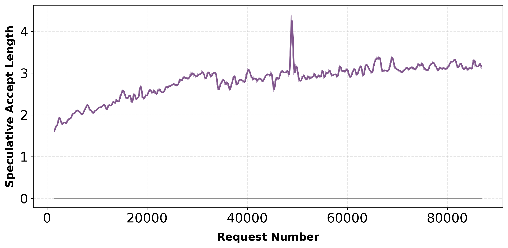
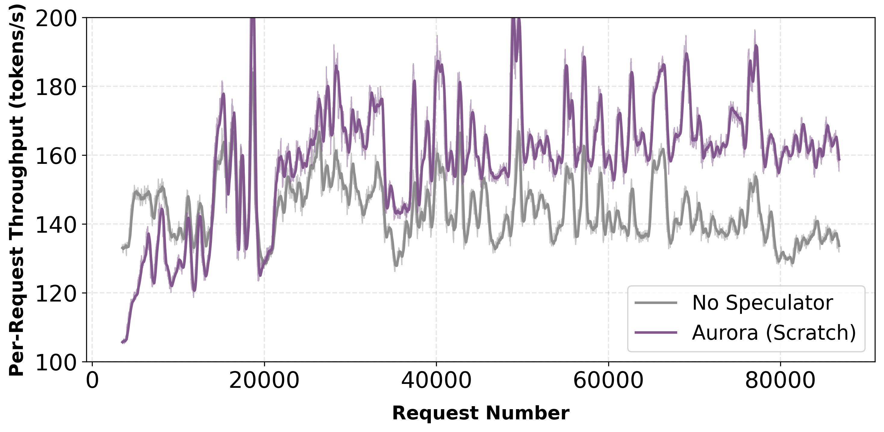
Qwen3-Coder-Next-FP8: Aurora (Scratch) raises acceptance length to 3, delivering 1.21× throughput improvement (batch size 8, averaged over final 10k steps after 1k warm-up).
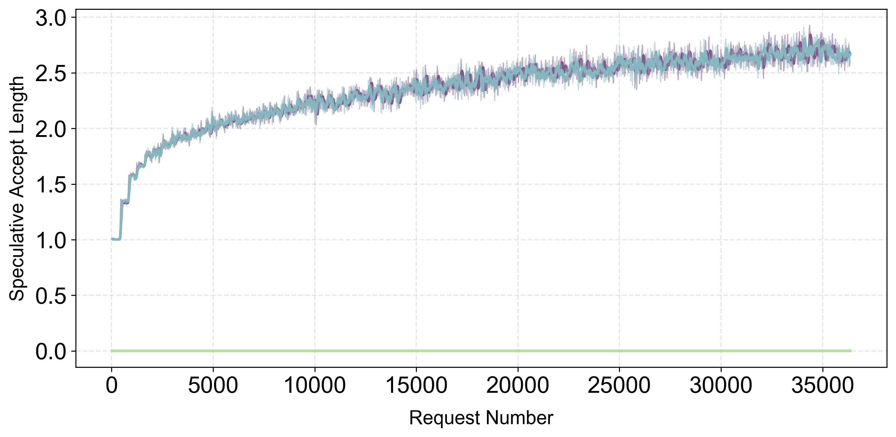
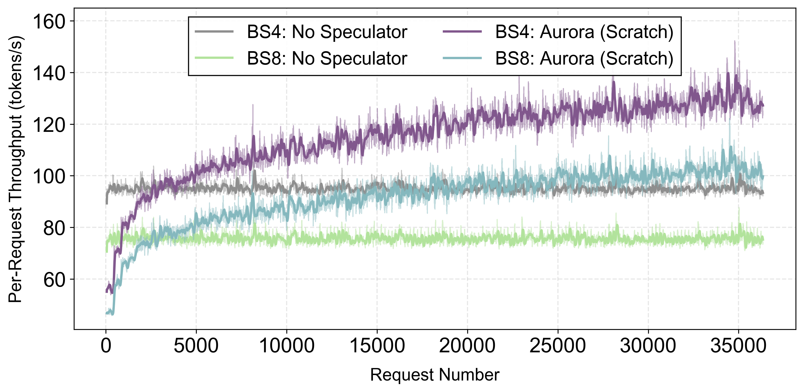
MiniMax M2.1: Aurora (Scratch) increases acceptance length to 2.8, achieving 1.45× throughput gains over baseline.
Adaptation to Distribution Shift
When requests are grouped by domain to induce abrupt distribution changes, Aurora adapts continuously. The system recovers acceptance length within approximately 10,000 requests after each shift.
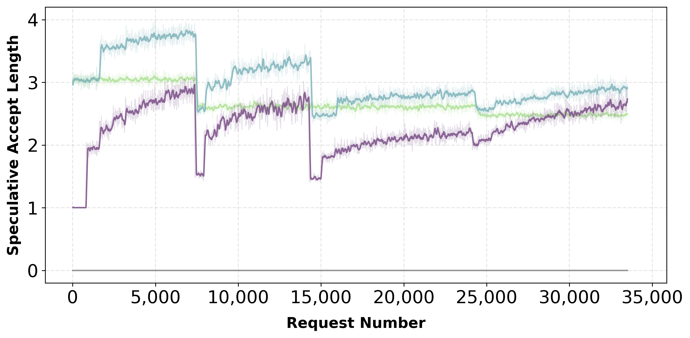
Aurora adapts to domain shifts, recovering performance
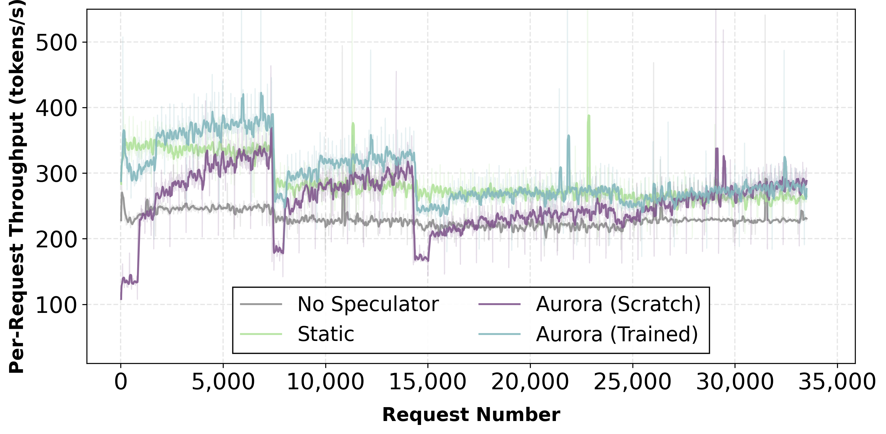
Throughput maintains competitiveness despite domain shifts
Training with Existing Speculator
Starting from a trained speculator, Aurora achieves 1.25× speedup over the static baseline through continuous adaptation.
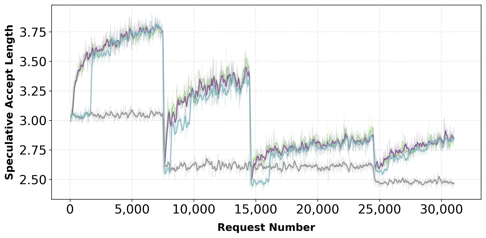
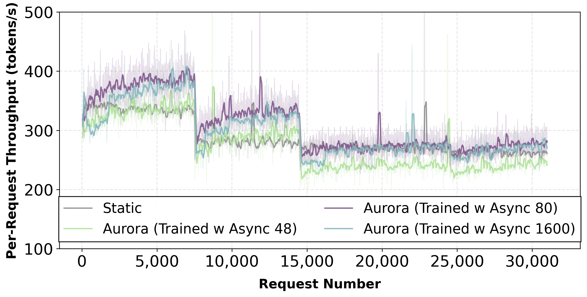
Starting from a trained speculator, Aurora delivers 1.25× throughput improvement over static baseline under domain shifts.
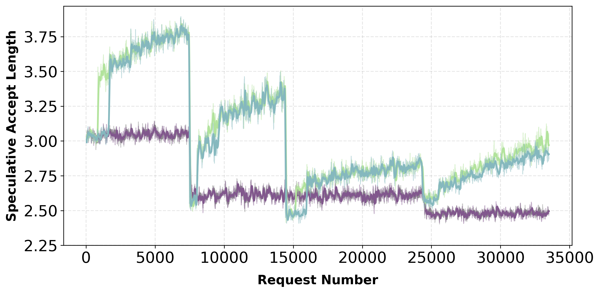
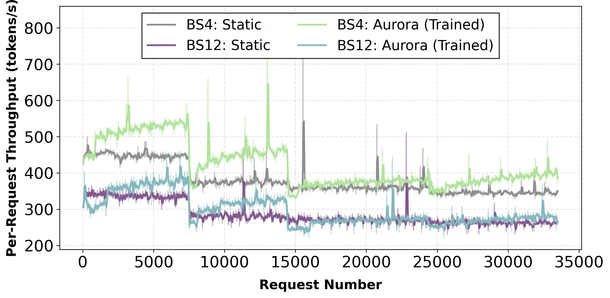
Batch size ablation study showing performance across different batch configurations.
Coding Domain Performance
Aurora also demonstrates strong performance on coding-specific workloads across different model families.
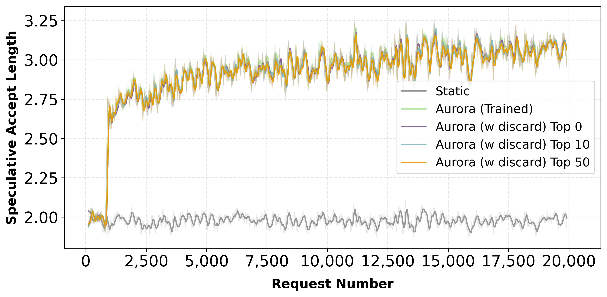
Coding benchmark results (Qwen3-8B)
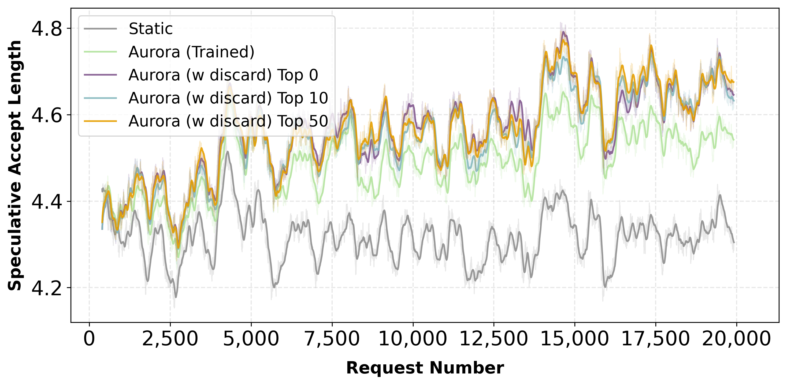
Coding benchmark results (LLaMA 3.1-8B)
Conclusion
We presented Aurora, a unified training-serving system that reframes speculative decoding as a joint learning-and-serving problem. By connecting an SGLang-based inference server with an asynchronous training server via GPU-aware RPC, Aurora enables continuous on-policy adaptation of the draft model under live traffic, closing the training-serving mismatch that limits conventional two-stage pipelines.
Our experiments show that simple online fine-tuning captures most attainable gains, that lazy synchronization best balances adaptation speed with serving stability, and that day-0 deployment from scratch is practical—an untrained speculator reaches competitive acceptance rates within thousands of requests, eliminating the offline pretraining bottleneck for onboarding new models.
BibTeX
@article{aurora2026,
title={When RL Meets Adaptive Speculative Training: A Unified Training-Serving System},
author={Wang, Junxiong and Bie, Fengxiang and Li, Jisen and Zhou, Zhongzhu and Shao, Zelei and Wang, Yubo and Liu, Yinghui and Wu, Qingyang and May, Avner and Yanamandra, Sri and Zhang, Yineng and Zhang, Ce and Dao, Tri and Liang, Percy and Athiwaratkun, Ben and Song, Shuaiwen Leon and Xu, Chenfeng and Wu, Xiaoxia},
journal={arXiv preprint arXiv:2602.06932},
year={2026},
url={https://arxiv.org/abs/2602.06932}
}